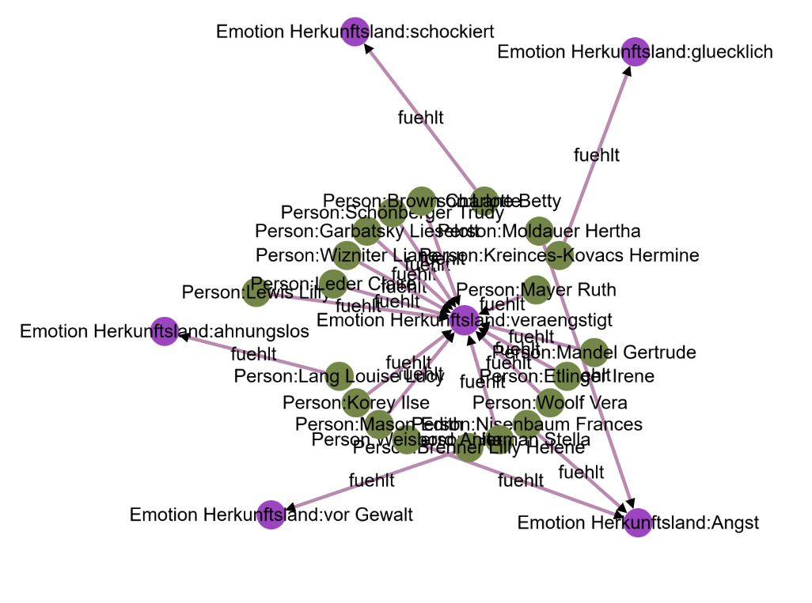

Die im DIKUSA-Projekt am Hannah-Arendt-Institut entwickelte Semporalgraph-Datenstruktur implementiert die Verknüpfung von temporalen und semantischen Netzwerken in einer auf niedrigschwellige Anwendung fokussierten Art als eine in sich geschlossene portable Webanwendung, die weder auf hohe Skalierbarkeit noch auf Interoperabilität wert legt, dafür aber eine unkomplizierte Funktionsweise bietet.
Netzwerkdaten stellen ein intuitives Datenmodell dar, welches Datendarstellung und -modellierung eng miteinander verwebt. In der Regel werden dabei durch Knoten dargestellte Entitäten über beispielsweise durch Pfeile dargestellte (gerichtete) Relationen miteinander verbunden. Bei semantischen Netzwerken wird dieses Konzept auf eine Subjekt-Prädikat-Objekt Repräsentation natürlicher Sprache angewendet, um semantische Netzwerkontologien zu erhalten.
Semporalgraphen erweitern diese Art des semantischen Netzwerks um eine Zeitkomponente, wie sie von temporalen Netzwerken bekannt ist. Dabei wird jede Relation mit einer Zeitspanne versehen und auf diese Art ein semantischer temporaler Netzwerkgraph erzeugt, welcher potenziell sehr gut zur Modellierung von diffus strukturiertem und zeitlich dynamischem Wissen geeignet ist.
Modellierung von sowohl semantischen als auch temporalen Netzwerken ist mit nicht zu unterschätzendem technischen Know How verbunden, insbesondere da bestehende Netzwerktechnologien stark auf Interoperabilität und technische Performanzoptimierung setzen. Diese hohe Einstiegshürde kollidiert etwas mit der grundsätzlich sehr breiten und niedrigschwelligen Anwendbarkeit von semantischen und temporalen Netzwerkanalysen, während sie technische Vorteile bringt, die für manches Vorhaben im geistes- und sozialwissenschaftlichen Bereich wenig relevant oder sogar hinderlich sein können.
Ein gerichteter Graph ist ein Semporalgraph wenn
Die Daten sind aus den Interviewbeständen des Leo Baeck Instituts (LBI) eruiert worden. Sie umfassen die temporalen und geografischen Geburts- und Fluchtdaten jüdischer geflüchteter Frauen und machen deren Fluchtrouten strukturiert nachvollziehbar. Des Weiteren sind Daten zur persönlichen Emanzipation der Frauen, also ihre relative Unabhängigkeit bzw. Abhängigkeit sowie deren beschriebene Emotionen eingespeist.
Insgesamt sind die Fluchtbewegungen von 142 Personen im Zeitraum 1922 bis 1984 sowie grundlegende biografische Daten für 131 von ihnen beschrieben. Der Datensatz besteht aus 777 Fakten von 1886 bis 1991, bei denen insgesamt 276 Entitäten (189 Subjekte mit 134 Objekte) über 9 Relationen verbunden sind. Die am häufigsten referenzierten Orte sind Wien, New York und London (alle als Fluchtziel), was insbesondere bald georeferenzierte Darstellungen der Fluchtbewegungen möglich macht.